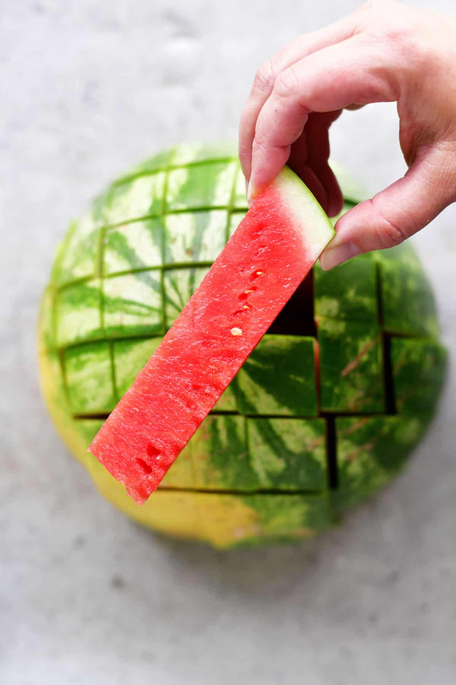

- Ripe Watermelon
- Sharp knife

Cut the watermelon in half so that you have two domes
Place the domes face down on your cutting board
TIP* Cutting longways is better for wedges
Cut 1 inch strips in your watermelon dome, forming a grid pattern of readily available watermelon sticks
